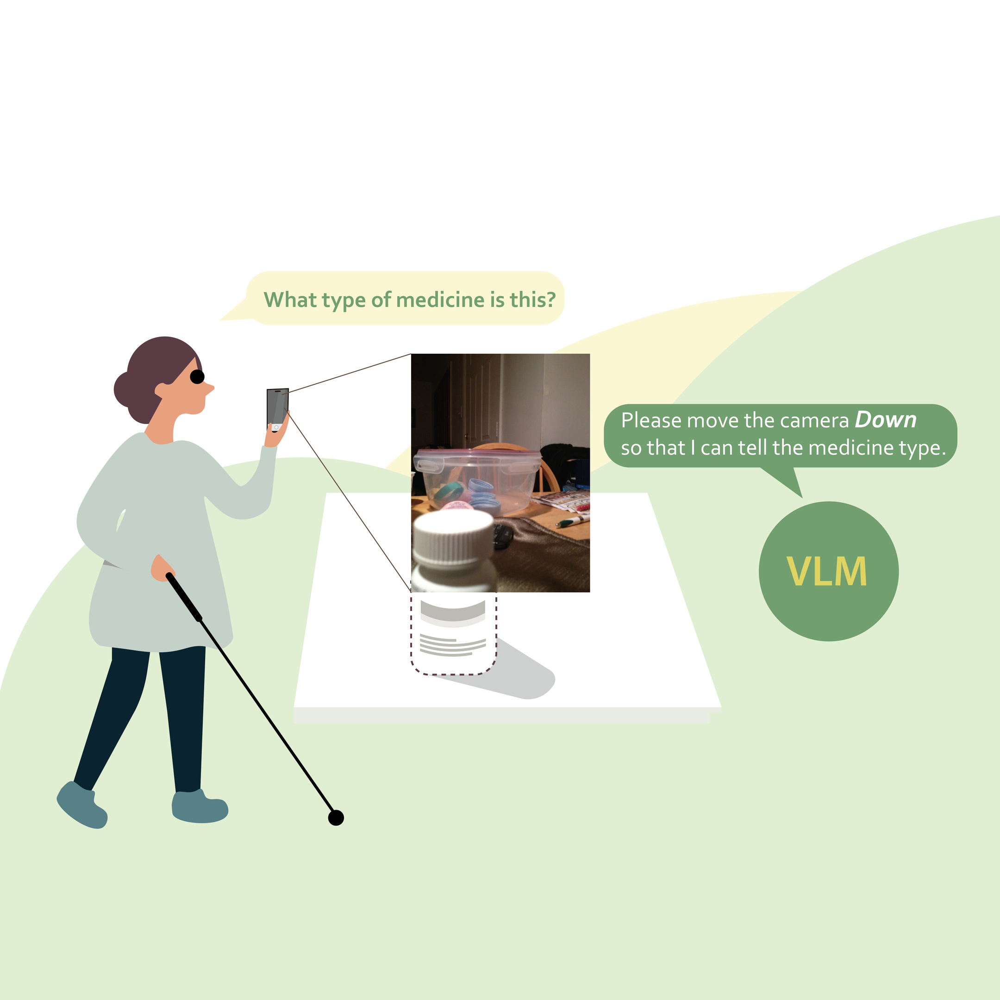

Camera Guidance for Vision-Language Models
NeurIPS 2024
Right This Way. When a photo can't answer the question, our models tell blind users how to move the camera. Training on our label-free synthetic data raised open vision-language models by up to 16 points, and the best model beat GPT-4o.
Li Liu, Diji Yang, Sijia Zhong, Kalyana Suma Sree Tholeti, Lei Ding, Yi Zhang, Leilani H. Gilpin